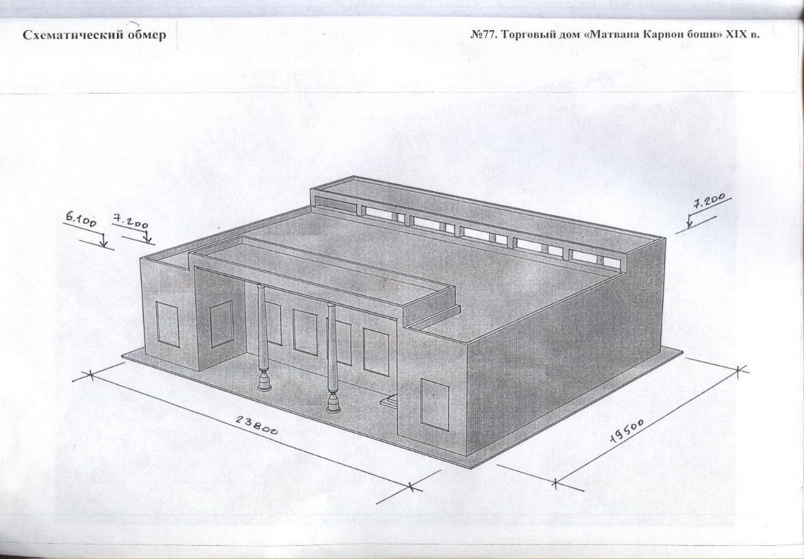
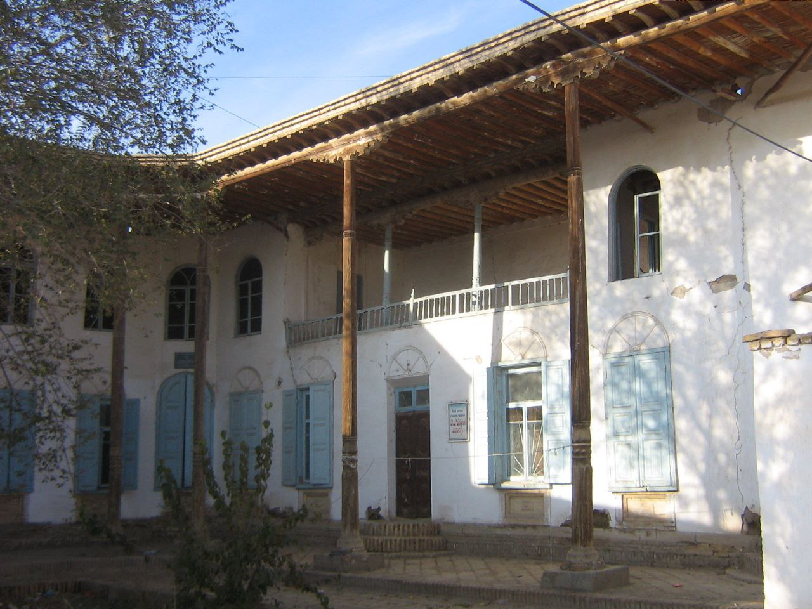
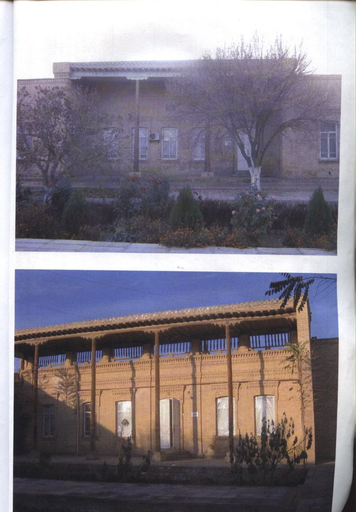

"MATVAFO KARVONBOSHI SAVDO UYI” va “MATVAFO KARVONBOSHI UYI"
1. Me’moriy inshootning nomi:
"MATVAFO KARVONBOSHI SAVDO UYI” va “MATVAFO KARVONBOSHI UYI"
2. Me’moriy inshoot tiklangan yil:
1910 yilda qurilgan.
3. Me’moriy inshoot joylashgan manzil:
MATVAFO KARVONBOSHI SAVDO UYI” Xiva shahri Deshon Qal’a hududidagi N.Kubro ko‘chasida joylashgan.
“MATVAFO KARVONBOSHI UYI”
Ota Darvoza oldida joylashgan bo‘lib, ba’zi sabablarga ko‘ra buzib tashlangan.
4. Me’moriy inshootning qurilish materiallari:
Sinchkori-nigirik, xom g‘isht, qum, alebastr-ganch, yog‘och
5. Inshootning bosh fasadi h.k.lar:



6. Me’moriy inshootning o‘lchamlari
Yodgorlikning o‘lchami – 23,8 x 19,5m;
Bino ayvonining balandligi – 7,2m;
Bino devorining balandligi – 6,1m;
Binodagi xonalarining soni - 25 ta;
Imorat ikki qavatlik qilib qurilgan;
Binoning tomi yog‘och to‘sinlar bilan tekis uslubda yopilgan;
Binoning deraza va eshiklari milliy va yevropacha uslubda qurilgan.
7. Me’moriy inshoot to‘g‘risida tarixiy ma’lumot:
XIX - asr oxiri va XX asr boshlarida Xiva xonligida katta obro‘ va martabaga ega bo‘lgan Matvafo Karvonboshi o‘zining mablag‘i hisobiga yashashga va savdo-sotiqqa mo‘ljallangan bir qator binolar qurdirgan. Hozirda yo‘qolib ketgan “Matvafo Karvonboshi uyi” XIX asr boshidagi an’anaviy bo‘lgan Xorazmga xos milliy shahar uyi tipida ikki qavatlik qilib qurilgan. Sovet hokimiyati davrida ushbu me’moriy yodgorlikdan turli ijtimoiy maqsadlarda foydalanib kelingan. Keyinchalik esa eskirgan qismlarini ta’mirlamasdan buzib tashlangan (5 va 6 rasmlar).
“Matvafo Karvonboshi Savdo uyi”ning binosidan esa hozirda ham foydalanilmoqda. Ushbu obidaning ko‘pchilik qismi yong‘in natijasida yonib ketgan. Binoning qolgan qismining xonalari texnik holati yaxshi bo‘lganligi bois, hozirda bu xonalardan Xiva tuman hokimligining ba’zi bo‘limlari foydalanmoqdalar.
8. Me’moriy inshootning texnik holati:
Matvafo Karvonboshi uyi buzilgan. Savdo uyiesa yong‘in natijasida 50% devor konstruksiyalari yo‘qolib ketgan, texnik holati yaxshi.
BOSH SAHIFAGA QAYTISH